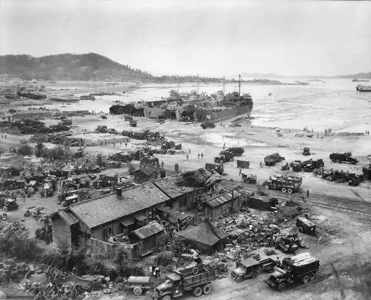

Fun Facts
The Incheon Landings
General MacArthur's successful amphibious landing in 1950 is a major event in the city's history, and a statue commemorating it is located in Jayu Park.
Its Origins
Incheon was the first city in South Korea to open to international trade in 1883, transforming it from a small village into a bustling port.

Third Largest City
Incheon was the first city in South Korea to open to international trade in 1883, transforming it from a small village into a bustling port.

Tourist Attractions
Incheon Chinatown
Bursting with history and flavor, Incheon’s Chinatown is the birthplace of Korean-Chinese cuisine. Don’t leave without tasting jajangmyeon (black bean noodles).
Songdo Central Park
A futuristic district built on reclaimed land, Songdo Central Park offers eco-friendly waterways, modern sculptures, and skyline views. It’s Korea’s city of tomorrow, today.